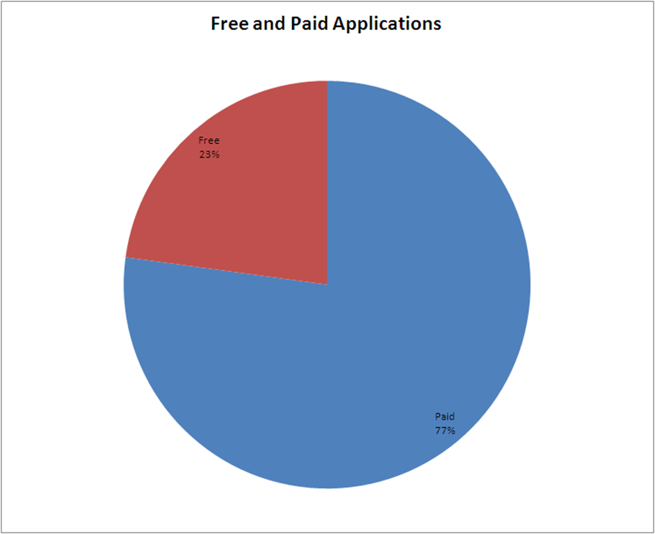

5 months and 9,000 Applications Later
11/25/2008
The App Store has now been around for a little more than 5 months. And so, this afternoon I was curious about the state of the world in the App Store. After digging around on the net for some up to date analysis, I gave up and decided I’d do some analysis myself. (Most of the analysis, including my own previous analysis, only uses the top applications, which are available in an RSS feed. But that creates bias, since the analysis is exclusively based upon successful applications).
After a little expedition to gather some data (I admit it, I used .Net rather than a more fashionable scripting language), I now have an easily updateable spreadsheet with all of the apps in the app store.
There were some surprises.
Application Publishing Trends
For example, there are more than 9,000 applications in the app store. You read that right. I had seen estimates of 5,000+, but that really underestimates just how many applications are there (a ton…). There is now something like 180 new applications each day. It’s an incredible trend that currently isn’t showing any sings of leveling off.
Note the huge spike around the street availability date of the 2nd generation iPhone- developers are rushing to get their app in the store in time for the launch (only to be disappointed when the approval process was opaque and sluggish). Apple has clearly worked to scale their review process since their normal days are approaching that initial spike that overwhelmed the review process around the launch.
If you have a look at the cumulative chart, you can see the same thing- little to no drop off in the volume of applications…

Pricing
There are more than 7,000 applications that are for sale, and just over 2,000 free applications.

The average price of an application on the app store is $3.21, but if you ignore the free applications and instead ask the question what the average price is for non-free applications, the answer is actually $4.15.
The distribution of prices is pretty much what you’d expect- a lot of free and cheap applications, very few applications that are very expensive. Note that there are more $.99 applications than free applications.

When you look at the average price in each category, it’s not surprising to see serious application categories like Business, Healthcare, and Finance have the highest average price. Also not that surprising to see entertainment oriented categories with the lowest average prices. This follows the vitamin versus pain killer theory- people pay more for pain killers than for vitamins.

A related point to consider- free applications are a lot more popular than paid applications. Since we don’t know how the popularity score is calculated, it’s a bit difficult to figure out what to make of this, other than to point out the obvious- people are willing to try free stuff.
Distribution
In a previous posts I analyzed the 100 most popular applications (at the time). One of the takeaways from that analysis was that games dominated the top application lists. If you needed more evidence that games are the runaway success of the store, here it is. Games represent 23% of the applications available on the store, but make up between 39 and 50% of the positions on the list of top applications.
Most Popular Applications (Any Category, Any Price)
The App Store data about each application contains a field with a popularity score (this is the field that is used to show the popularity bar graphs next to songs and other content in the store). Applications, include that data as well, with values ranging from 0 to 1. When I researched how that value is populated, Apple’s official position is that it is a combination of sales and other Apple internal calculations. Well, according to the popularity score, here are the most popular applications in the App Store. All are free.
| Name | Price | Popularity |
|---|---|---|
| Google Mobile App | $0.00 | 1.000000000000 |
| Shazam | $0.00 | 1.000000000000 |
| Urbanspoon | $0.00 | 1.000000000000 |
| Backgrounds | $0.00 | 1.000000000000 |
| 160000 Recipes - BigOven | $0.00 | 1.000000000000 |
| Cube | $0.00 | 1.000000000000 |
| The Weather Channel® | $0.00 | 1.000000000000 |
| $0.00 | 1.000000000000 | |
| Touch Hockey: FS5 (FREE) | $0.00 | 1.000000000000 |
| Google Earth | $0.00 | 0.886920900000 |
Most Popular Paid Applications
Using the same popularity score, here are the more popular paid applications in the store. Note the massive discrepancy in the scores. The most popular paid application is #48 on the list of all of the most popular applications. Free clearly rules on the App Store.
| Name | Price | Popularity |
|---|---|---|
| Flick Fishing | $0.99 | 0.293970020000 |
| Ocarina | $0.99 | 0.235705390000 |
| CameraBag | $2.99 | 0.217822370000 |
| Moto Chaser | $0.99 | 0.183404980000 |
| Face Melter | $1.99 | 0.165116010000 |
| Vint B&W | $0.99 | 0.143047210000 |
| iHunt | $0.99 | 0.112076000000 |
| Pocket First Aid & CPR Guide | $1.99 | 0.102925606000 |
| Grocery iQ | $0.99 | 0.100141720000 |
| Easy Relax | $0.99 | 0.092379180000 |
Applications Over $100
When I took a look at the expensive applications, I was surprised to find an application that cost $899.99! Anyone remember the controversy around the release and subsequent removal of ‘I Am Rich?’ These expensive applications, unlike the frivolous ‘I Am Rich’ are actually quite useful. iRa, for example, provides monitoring of video surveillance cameras. The ‘Lexi’ applications provide access to a comprehensive drug database for use by medical providers to improve point of care service. These are not trivial applications…
| Name | Category | Publisher | Price |
|---|---|---|---|
| iRa | Business | Lextech Labs | $899.99 |
| MATG - SAP BusinessOne | Finance | MyAccountsToGo | $449.99 |
| MATG - Dynamics GP | Finance | MyAccountsToGo | $449.99 |
| Lexi-COMPLETE | Healthcare & Fitness | Lexi-Comp | $299.99 |
| Lexi-SELECT | Healthcare & Fitness | Lexi-Comp | $219.99 |
| Eclipse 500 | Utilities | PunkStar Studios | $199.99 |
| ROSIE Home Automation | Lifestyle | Savant Systems LLC | $199.99 |
| Lexi-CLINICAL SUITE | Healthcare & Fitness | Lexi-Comp | $179.99 |
| Lexi-PEDIATRIC SUITE | Healthcare & Fitness | Lexi-Comp | $179.99 |
| ProRemote | Music | Far Out Labs | $149.99 |
| iChart EMR | Healthcare & Fitness | Caretools Inc | $139.99 |
| Lexi-Drugs & Lexi-Interact | Healthcare & Fitness | Lexi-Comp | $119.99 |
| Dental Lexi-Drugs & Lexi-Interact | Healthcare & Fitness | Lexi-Comp | $119.99 |
| Tunic Guitar | Music | Bernhard Stopper | $109.99 |
Wrap Up
The growth of the application market for the iPhone is incredible. 9,000 applications in 155 months!
Free applications really dominate the app store, even though there are a lot more paid applications. No idea whether anyone is making serious money, though.
People are trying to sell serious applications on the App Store, charging hundreds of dollars for high value applications and data. No idea whether this is working at all.
If anyone has additional thoughts about interesting analysis to consider with this data, or would like an updated copy of the data so they can do some analysis themselves, leave me a comment and I’ll do what I can!